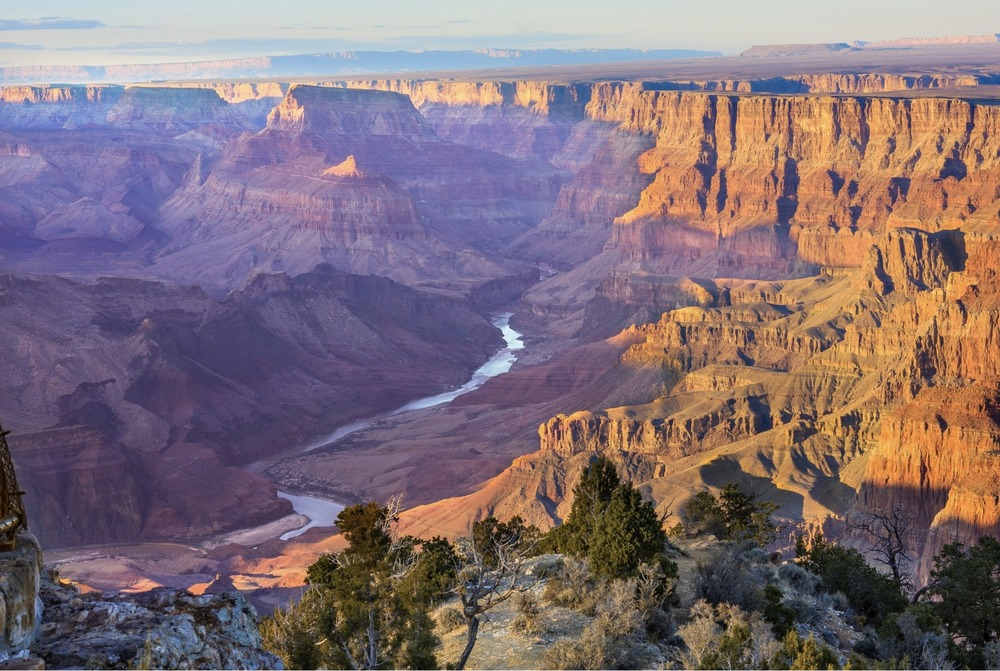

Our service was created to help visitors discover and enjoy the natural beauty of National Parks. Inspired by the breathaking canyon views, towering red-rock cliffs, and peaceful desert scenery, we wanted to create a helpful guide for people planning their visit.
We understand that exploring a news destination can sometimes be confusing, especially when visitors need information about hiking trails, scenic overlooks, park rules, and outdoor safety. That is why our guide brings useful information together in one convenient place.

© Adalie Frank
Here is a great place to learn about National Parks of the West National Park Service https://www.nps.gov/index.htm